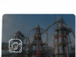

Lityum-İyon ve BESS Yangın Koruması — Termal Kaçak, Algılama ve Çok Katmanlı Güvenlik Rehberi
Enerji depolama sistemlerinde (BESS) ve lityum batarya odalarında yangın güvenliği; hücre seviyesinden konteyner ve saha ölçeğine kadar termal kaçak (thermal runaway), erken off-gas algılama, patlama tahliyesi ve çok katmanlı mühendislik mimarisini gerektirir.

ÇOK KATMANLI SAVUNMA MİMARİSİ
Lityum-iyon batarya ve Batarya Enerji Depolama Sistemlerinde (BESS) yangın koruması; tek bir söndürücü ajan seçimine indirgenemez. Batarya hücreleri aşırı ısınma, elektriksel zorlanma veya iç kısa devre nedeniyle termal kaçağa (thermal runaway) girdiğinde kendi iç kimyasal yapısından oksijen salınımı yapabilir ve yanıcı elektrolit gazları (off-gas) üretebilir. Bu nedenle ortamdaki oksijeni kesen geleneksel gazlı söndürme sistemleri hücre içi ekzotermik reaksiyonu tek başına durduramaz. Doğru bir yangın koruma stratejisi; hücre, modül, kabin, konteyner ve saha seviyelerini ayrı ayrı ele alan; erken off-gas algılama, BMS elektriksel izolasyonu, alevli fazı bastıran temiz gazlı sistemler, hücreler arası yayılımı durduran termal yönetim/soğutma altyapısı ve NFPA 68/69 deflagrasyon tahliyesinden oluşan çok katmanlı bir mühendislik mimarisini şart koşar.
Koruma seviyeleri: Hücreden açık saha ölçeğine mimari hiyerarşi
Lityum batarya yangın güvenliğinde en yaygın hata, "lityum batarya" ifadesine tek tip bir reçete yazmaktır. Yangın davranışı, termal kütle, gaz birikim hacmi ve müdahale dinamikleri korunulan hiyerarşik seviyeye göre kökten değişir:
| Fiziksel Seviye | Birincil Tehlike Dinamiği | Mühendislik Koruma Yaklaşımı | Uygulanabilir Standart Referansı |
|---|---|---|---|
| Hücre (Cell) | İç kısa devre, SEI tabakası çökmesi, basınç diski yırtılması | Hücre kimyası optimizasyonu, akım kesme cihazı (CID), dahili emniyet valfi | UL 1642 / IEC 62619 |
| Modül (Module) | Hücreden hücreye termal ısı transferi ve kaskat yayılım | Aerogel/mika termal bariyerler, faz değişim malzemeleri (PCM), hücreler arası soğutma | UL 9540A Modül Testi |
| Kabin / Raf (Rack) | Yüksek DC bara gerilimi, ark parlaması, modüller arası alev sıçraması | Raf seviyesi off-gas/duman algılama, dahili sigortalar, şönt açtırıcı kontaktör | UL 9540A Ünite Testi |
| Kabin (Cabinet) | Kapalı hacimde lokal gaz birikimi ve ikincil kablo yangını | Lokal pano içi mikro söndürme, dielektrik gaz deşarjı, sızdırmazlık contaları | NFPA 855 / UL 9540 |
| Konteyner (BESS) | Konteyner içi yanıcı gaz birikimi ($H_2$, VOC), patlama/deflagrasyon riski | Mekanik süpürme havalandırması, NFPA 68 patlama kapağı, temiz gaz ve dış su bağlantısı | NFPA 855 Bölüm 9 / FM DS 5-33 |
| Akü Odası (UPS / Oda) | Bina içi yangın sirayeti, toksik duman, yapısal yangın yükü | EI 120 yangın duvarları, oda sızdırmazlık testi, gazlı söndürme, acil egzoz | BYKHY Madde 98 / NFPA 855 Bölüm 6 |
| Açık Saha (Site Level) | Konteynerler arası termal radyasyon ve çevre yapılara sıçrama | Minimum 3 ft (0,9 m) ila 10 ft mesafe ayırımı, yangın duvarları, hidrant ve itfaiye erişimi | NFPA 855 Tablo 4.3 / FM DS 5-33 |
Termal kaçak (Thermal Runaway) ve zincirleme yayılım fiziği
EKZOTERMİK KENDİNİ BESLEME MEKANİZMASI
Termal kaçak, batarya hücresinde üretilen ısının ortamdan uzaklaştırılan ısıdan daha hızlı artması durumunda ortaya çıkan, sıcaklık arttıkça reaksiyon hızının katlanarak büyüdüğü geri beslemeli bir zincirleme bozulmadır.
Bir lityum hücresinde termal kaçak şu aşamalarla ilerler:
- Aşama 1 — Başlangıç ve SEI Bozulması: Mekanik ezilme, üretim toleransı kaynaklı dendrit oluşumu, elektriksel aşırı şarj/deşarj veya dış ortam sıcaklığı nedeniyle anot üzerindeki Katı Elektrolit Arayüzü (SEI) parçalanmaya başlar.
- Aşama 2 — Elektrolit Buharlaşması ve Off-Gas Salınımı: Hücre içi basınç artar ve mekanik basınç tahliye diski yırtılarak ortama gaz ve solvent buharları püskürür.
- Aşama 3 — Katot Bozunması ve İç Oksijen Üretimi: Hücre kimyasına bağlı olarak katot kristal kafesi termal olarak parçalanabilir. Örneğin NMC ve LCO tipi kimyalarda katot bozunması serbest kimyasal oksijen açığa çıkarabilir. Bu durum, hücre içi reaksiyonun dış ortam havası olmasa dahi kendi kendini beslemesine zemin hazırlar.
- Aşama 4 — Kaskat Yayılım (Cascading Propagation): Kaçağa giren hücre tepe sıcaklıklara ulaştığında, açığa çıkan ısı iletim (kondüksiyon) ve ışınım (radyasyon) yoluyla modüldeki komşu hücreleri tetikler. Bitişik hücreler sırayla termal kaçağa girerek modülü ve ardından tüm kabini sarabilir.
Erken algılama: Off-gas çıkışı, gaz bileşimi ve duman dedeksiyonu
Standart yangın algılama sistemleri (optik duman dedektörleri veya sıcaklık sensörleri), ancak alevli yanma veya yoğun duman oluştuktan sonra alarm verir. Ancak lityum pillerde bu aşama, termal kaçağın zaten başladığı ve önlenmesinin güçleştiği evredir.
Off-Gas Nedir ve Hangi Gazları İçerir?
Hücrenin emniyet valfi açıldığında dışarı salınan gaz karışımı evrensel tek bir formüle sahip değildir; kullanılan elektrolite, katot/anot kimyasına, hücrenin şarj durumuna (State of Charge - SoC) ve bozulma türüne göre değişir. Bununla birlikte tipik off-gas salınımı şu bileşenleri içerir:
- Hidrojen (H2): Düşük tutuşma enerjisine ve geniş patlama limitine (%4 - %75) sahip son derece hafif yanıcı gaz.
- Karbonmonoksit (CO): Elektrolitin eksik yanması ve parçalanmasıyla açığa çıkan toksik ve yanıcı gaz.
- Karbondioksit (CO2): Karbonat bazlı solventlerin termal bozunma ürünü.
- Elektrolit Buharları ve VOC'ler: Dimetil karbonat (DMC), etil metil karbonat (EMC) gibi yanıcı organik solvent molekülleri.
Özel off-gas sensörleri (örneğin Li-ion Tamer tipi elektrolit algılayıcıları), belirli arıza senaryolarında duman partikülleri veya ortam sıcaklığı yükselmeden önce gaz çıkışını tespit ederek sisteme değerli bir erken müdahale penceresi kazandırabilir. Ancak bu uyarı süresi her bataryada sabit bir dakika değildir; arızanın gelişim hızına göre değişir.
BMS (Batarya Yönetim Sistemi) ve elektriksel izolasyonun rolü
Batarya Yönetim Sistemi (BMS); hücre gerilimlerini, sıcaklık dağılımını, şarj/deşarj akımlarını ve empedans değişimlerini sürekli izleyen elektronik bir kontrol organıdır. Yangın güvenliği mimarisinde BMS'in rolü net olarak tanımlanmalıdır:
BMS BİR YANGIN SÖNDÜRME SİSTEMİ DEĞİLDİR
BMS elektriksel ve termal izleme sağlar; ancak fiziksel olarak başlamış bir termal kaçağı veya mekanik hücre hasarını söndüremez. BMS yangın güvenlik zincirinin koruyucu bir katmanıdır.
BMS ile yangın algılama paneli arasındaki entegrasyon şu kritik işlevleri yürütür:
- Otomatik Şönt Açtırma (Electrical Isolation): Off-gas veya ön alarm sinyali alındığında, etkilenen batarya dizisinin ana DC kontaktörü derhal açılarak elektriksel yük ve şarj akımı kesilir. Enerji akışının kesilmesi ekzotermik süreci yavaşlatabilir.
- HVAC ve Damper Yönetimi: Yangın algılandığında konteyner iklimlendirme sistemi durdurulur ve yangın damperleri kapatılarak gazlı söndürme konsantrasyonu korunur.
- Acil Durum Bildirimi: Tesis SCADA sistemine ve itfaiye santraline alarm aktarılır.
Söndürme vs soğutma ayrımı: Kritik mühendislik çizgisi
BESS yangın korumasında en sık karşılaşılan kavram yanılgısı, alev söndürme ile termal soğutmanın birbiriyle karıştırılmasıdır:
- Yangın Söndürme (Fire Suppression): Açıkta yanan elektrolit alevini, kablo plastiklerini ve ikincil yapısal malzemeleri söndürmeyi hedefler. Temiz gazlar (Novec 1230, FM-200, İnert gazlar) bu alevli fazı 10 ila 60 saniyede başarıyla bastırır.
- Termal Soğutma (Thermal Management & Cooling): Hücre çekirdeğinde hapsolmuş megajoule mertebesindeki kimyasal ısı enerjisini uzaklaştırarak komşu hücrelerin kritik kaçak sıcaklığına ulaşmasını engellemektir. Gazlı söndürücülerin özgül ısı kapasitesi sınırlı olduğundan, hücre içi sıcaklığı hızla düşüremezler.
- Su Bazlı Soğutmanın Rolü: Suyun yüksek özgül ısısı ($4,184\text{ J/g}\cdot\text{K}$) ve buharlaşma gizli ısısı, hücreler arası yayılımı engellemede en etkili soğutma ortamını sağlar. Ancak suyun her tesiste zorunlu veya tek çözüm olduğu iddia edilemez; su drenajı, donma riskleri, elektrik çarpması tehlikesi ve üreticinin UL 9540A test sonuçları doğrultusunda projelendirilmelidir.
Temiz gazlı söndürme sistemleri BESS'te ne zaman rol oynayabilir?
Temiz gazlı yangın söndürme sistemleri BESS tesislerinde ve akü odalarında önemli bir koruma bileşenidir; ancak görev tanımları ve sınırları net çizilmelidir:
Temiz Gazların Başardıkları:
- Elektriksel İletkenlik Sıfırdır (Dielektrik): Canlı elektrik ve DC bara sistemlerine deşarj edildiğinde kısa devreye veya ark parlamasına yol açmaz.
- Kalıntısız ve Tahribatsızdır: Yangından etkilenmemiş sağlam elektronik kontrol kartlarına, inverterlere ve batarya yönetim ünitelerine zarar vermez.
- İlk Alevli Tutuşmayı Hızla Bastırır: Konteyner veya oda içindeki Class A (kablo, plastik) ve Class B (solvent buharı) alevlerini kontrol altına alarak ortam sıcaklığının ani yükselmesini geciktirir.
Temiz Gazların Sınırları ve Mühendislik Gerçeği:
- Metal muhafazalı hücre gövdesinin içindeki kimyasal parçalanmayı durduramaz.
- Ortamda gaz tutma süresi (Hold Time) sona erdiğinde veya kapılar açıldığında, soğutulmamış sıcak batarya çekirdeği havayla temas ettiğinde yeniden alevlenme (re-ignition) riski taşır.
Bu nedenle temiz gazlı söndürme; erken algılama, BMS açtırma ve gerektiğinde sınırlandırıcı soğutma protokolleriyle birlikte hibrit bir savunma katmanı olarak konumlandırılmalıdır.
Patlama / deflagrasyon riski, mekanik süpürme ve NFPA 68 / NFPA 69
BESS konteynerlerinde en tehlikeli aşamalardan biri, alevsiz termal kaçakta ortama salınan yanıcı gazların konteyner içinde birikmesidir. Yanıcı gaz birikimi (özellikle hidrojen ve VOC solvent buharları) ile bir ark kaynağının buluşması şiddetli bir deflagrasyona yol açabilir.
DEFLAGRASYON ZİNCİRİ
Gaz Salınımı ($H_2$ / CO / VOC) → Kapalı Konteynerde Konsantrasyon Artışı → Alt Yanma Sınırı (LFL) Aşımı → Ark veya Sıcak Yüzeyle Tutuşma → Patlama / Basınç Yükselmesi
Bu tehlikeyi yönetmek için iki ana normatif mühendislik yaklaşımı uygulanır:
- NFPA 69 (Patlama Önleme Sistemleri): Yanıcı gaz konsantrasyonunu sürekli olarak Alt Yanma Sınırının %25'inin altında (%25 LFL) tutmak amacıyla tasarlanmış acil durum mekanik süpürme havalandırması.
- NFPA 68 (Deflagrasyon Basınç Tahliyesi): Olası bir tutuşma durumunda oluşan ani pik basıncın konteyner kabuğunu parçalamaması için hesaplanmış basınç tahliye kapakları (explosion venting panels). Bu kapaklar konteyner tavanına veya personel bulunmayan güvenli cephelere açılarak yapısal yıkımı önler.
Not: Her BESS projesinde standart bir patlama kapağı ölçüsü uygulanamaz; konteyner hacmine, batarya kimyasının ürettiği maksimum gaz debisine ($Kg$ değeri) ve kabuk dayanımına göre hidrolik ve yapısal hesaplama yapılır.
Normatif standartlar hiyerarşisi: NFPA 855, UL 9540 ve UL 9540A
BESS yangın güvenliğinde kullanılan standartların işlevleri ve yasal kapsamları birbirinden kesin çizgilerle ayrılmalıdır:
| Standart / Doküman | Kategori | Temel Amacı ve Rolü | Ne Değildir? |
|---|---|---|---|
| NFPA 855 (2023) | Kurulum Standardı (Installation Standard) | Sabit enerji depolama sistemlerinin bina içi ve dış saha yerleşim mesafelerini, maksimum grup kapasitelerini (ör. 600 kWh kuralı), yangın algılama, söndürme ve acil durum operasyonlarını belirler. | Ürünün laboratuvar test metodolojisi değildir; tesis tasarım yönetmeliğidir. |
| UL 9540 | Sistem Güvenlik Standardı (Product Safety) | İnverter, batarya, BMS ve muhafazanın bir bütün olarak elektrik, mekanik ve yangın güvenliğini sertifikalandıran sistem standardıdır. | Münferit bir yangın söndürme kuralı değildir; ürün onay belgesidir. |
| UL 9540A | Test Yöntemi (Test Method) | Termal kaçak yangın yayılımını 4 kademede (Hücre, Modül, Ünite, Kurulum) ölçen laboratuvar test protokolüdür. Isı yayılım hızını (HRR) ve gaz bileşimini raporlar. | Kurulum standardı DEĞİLDİR. Test sonucuna göre NFPA 855 mesafe muafiyetleri değerlendirilir. |
| FM Global DS 5-33 | Mülk Kaybı Önleme Kılavuzu | Sigorta ve endüstriyel risk perspektifinden kompartımanlama, yüksek debili sprinkler koruması ve bina ayrım mesafelerini tanımlar. | Yasal zorunluluk değil; uluslararası endüstriyel kabul kriteridir. |
| IEC 62933-5-2 | Uluslararası Güvenlik Normu | Şebekeye bağlı elektrik enerjisi depolama sistemlerinin çevresel ve güvenlik gereksinimlerini düzenler. | Yalnızca yangın güvenliğiyle sınırlı değildir; genel elektrik güvenliğini kapsar. |
Fenix Yangın'da BESS yangın koruması nasıl değerlendirilir?
Fenix Yangın mühendislik ekipleri, BESS ve lityum batarya projelerinde hazır kalıplar yerine 15 adımlı analitik bir mühendislik değerlendirme metodolojisi izler:
Hücre kimyası (LFP, NMC vb.), termal kaçak eşik değerleri ve üreticinin UL 9540A test raporu doğrulanır.
Tesisin konteyner BESS, bina içi UPS enerji odası veya bağımsız kabin formatına göre mimari kompartımanlama sınırları belirlenir.
Erken off-gas sensörleri, lazerli duman dedektörleri ve BMS DC şönt açtırma kontakları hidrolik ve elektriksel olarak entegre edilir.
İlk müdahale temiz gazlı söndürme sistemi, acil durum mekanik süpürme egzozu ve NFPA 68 deflagrasyon tahliye kapakları projelendirilir.
Devreye alma ve kabul testleri protokolleriyle tüm senaryolar simüle edilir; yıllık periyodik kontrol programı tanımlanır.
Kaynaklar ve normatif standartlar
Bu rehberde sunulan mühendislik verileri ve prensipler aşağıdaki uluslararası norm ve standartlara dayanmaktadır:
- NFPA 855 (2023 Edition): Standard for the Installation of Stationary Energy Storage Systems, National Fire Protection Association.
- UL 9540A (4th Edition): Test Method for Evaluating Thermal Runaway Fire Propagation in Battery Energy Storage Systems, Underwriters Laboratories.
- UL 9540 (2nd Edition): Standard for Energy Storage Systems and Equipment, Underwriters Laboratories.
- NFPA 68 (2023 Edition): Standard on Explosion Protection by Deflagration Venting, National Fire Protection Association.
- NFPA 69 (2024 Edition): Standard on Explosion Prevention Systems, National Fire Protection Association.
- FM Global Data Sheet 5-33 (2023): Electrical Energy Storage Systems, Factory Mutual Insurance Company.
- IEC 62933-5-2:2020: Electrical energy storage (EES) systems - Part 5-2: Safety requirements for grid-integrated EES systems, International Electrotechnical Commission.
Sıkça Sorulan Sorular
Lityum-iyon bataryalarda termal kaçak (thermal runaway) nedir?
Termal kaçak; aşırı ısınma, mekanik hasar, aşırı şarj/deşarj veya iç kısa devre neticesinde batarya hücresi içinde başlayan kontrolsüz ekzotermik kimyasal reaksiyonlar zinciridir. Isı üretim hızı ortamın ısı dağıtma hızını aştığında hücre içi sıcaklık ve basınç hızla yükselerek gaz çıkışına, yangına ve bitişik hücrelere sıçramaya yol açar.
Gazlı söndürme sistemleri lityum batarya yangınını tek başına tamamen söndürür mü?
Hayır. Temiz gazlı söndürme sistemleri (Novec 1230, FM-200, İnert gazlar) açık alevli yanmayı ve kabin içi plastik/kablo yangınlarını hızla bastırır; ancak hücre çekirdeğindeki termal bozunmayı ve iç ısıyı tek başına ortadan kaldıramaz. Gaz konsantrasyonu dağıldığında soğutulmamış sıcak metal kütlesinden yeniden alevlenme (re-ignition) riski bulunur.
Erken off-gas algılama nedir ve ne işe yarar?
Hücre hasarı başladığında ve emniyet diski yırtıldığında duman ve alevden önce hidrojen, karbonmonoksit ve elektrolit solvent buharları ortama salınır. Off-gas algılama sensörleri bu gazları erken evrede yakalayarak yangın çıkmadan önce BMS üzerinden elektriksel devrenin kesilmesini sağlar.
UL 9540A bir yangın söndürme montaj standardı mıdır?
Hayır. UL 9540A bir kurulum veya montaj standardı değil; batarya enerji depolama sistemlerinde termal kaçak yangın yayılımını değerlendiren bir test yöntemidir. Hücre, modül, ünite ve kurulum seviyelerinde ısı yayılım hızı, gaz hacmi ve alevlenebilirlik verisi üretir.
UPS batarya odaları ile şebeke tipi BESS konteynerlerinin yangın koruması aynı mıdır?
Hayır. Bina içindeki UPS batarya odaları mimari kompartımanlama, oda sızdırmazlığı, gazlı söndürme ve mekanik havalandırma ilkelerine dayanırken; açık sahadaki modüler BESS konteynerleri yüksek enerji yoğunluğu sebebiyle NFPA 855 mesafe kuralları, deflagrasyon tahliye kapakları ve yüksek debili soğutma altyapısını gerektirir.
BESS ve lityum batarya tesisiniz için çok katmanlı yangın güvenliğini projelendirelim.
Uzman mühendis kadromuz; NFPA 855 uyumlu yerleşim, erken off-gas algılama, gazlı söndürme ve deflagrasyon tahliyesi analizleriyle anahtar teslim çözüm sunar.